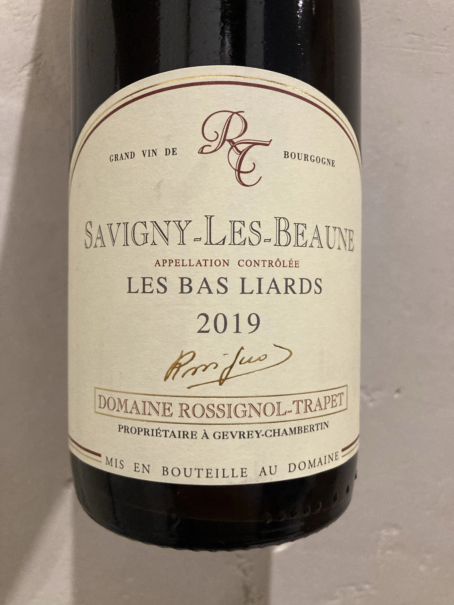
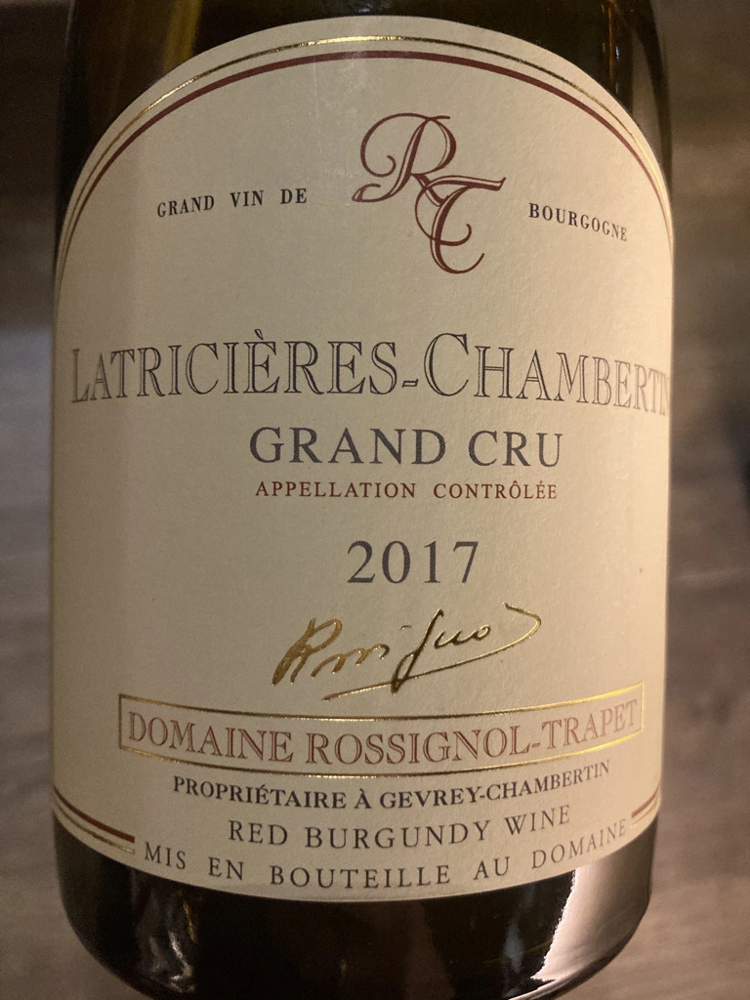
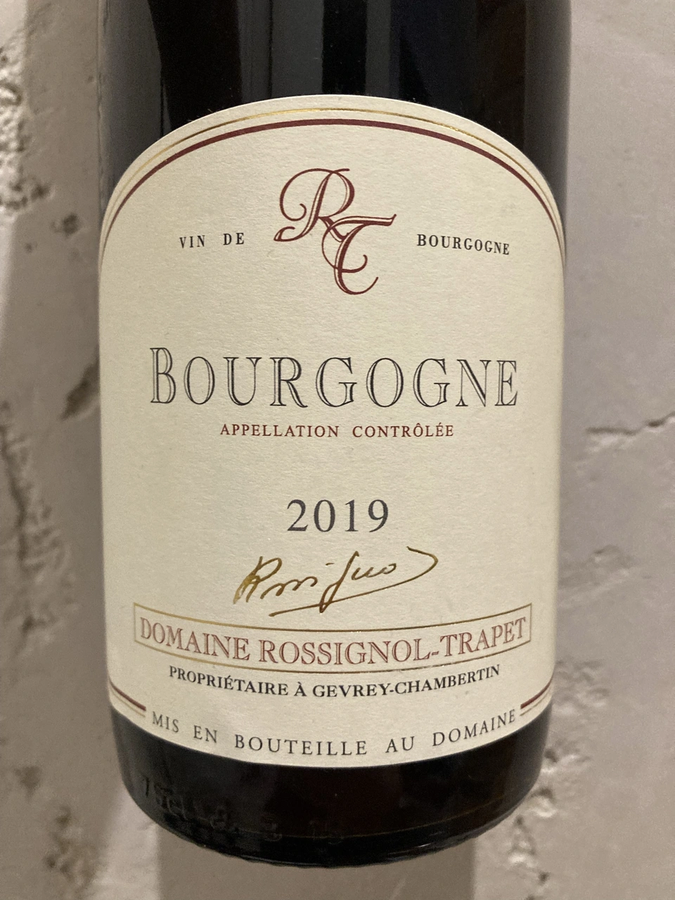
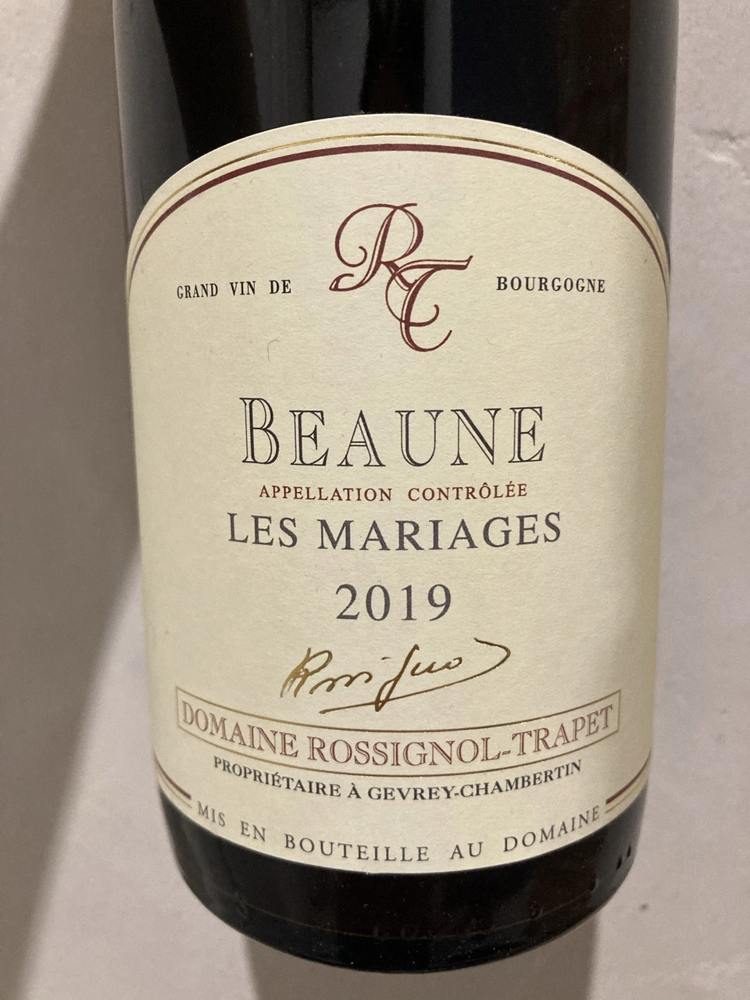
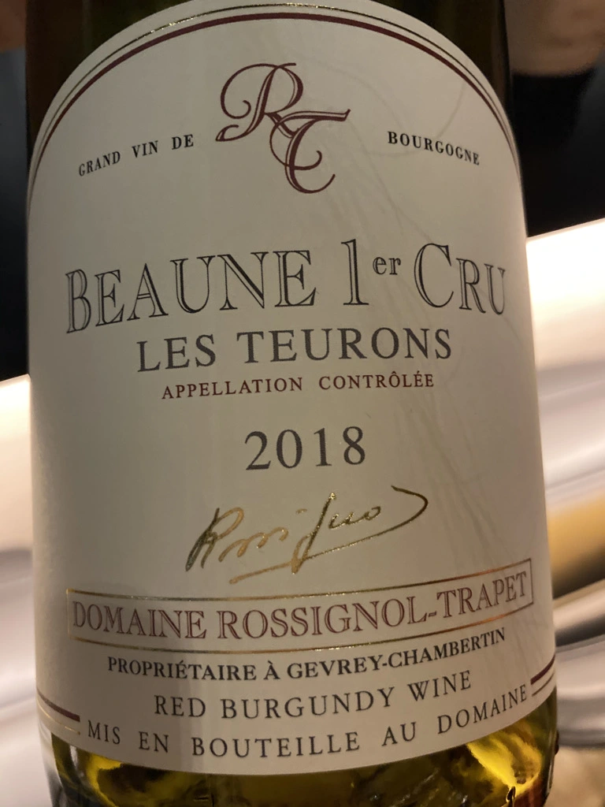
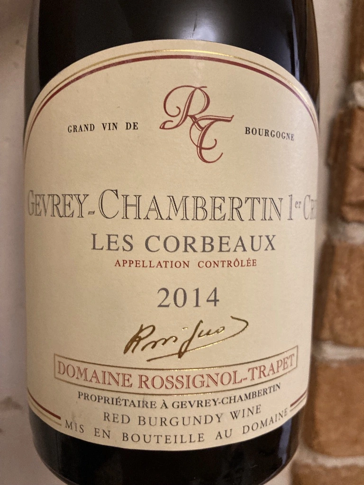
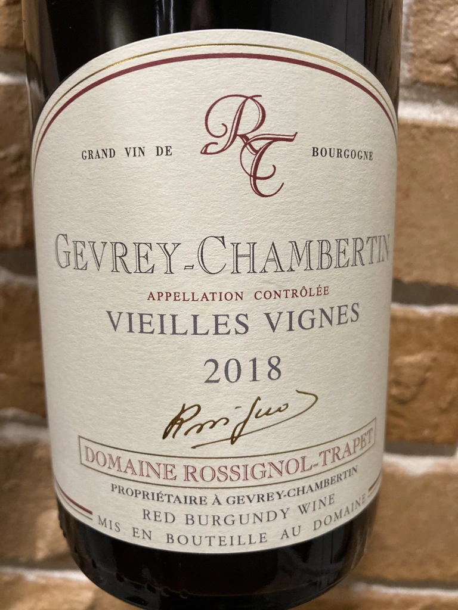
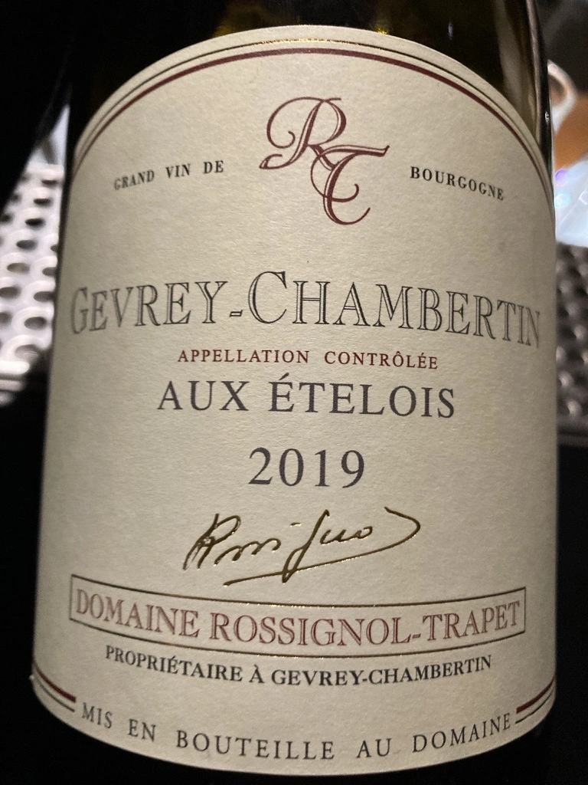

- Type
- Red Still, Dry
- Producer
- Domaine Rossignol-Trapet
- Vintage
- 2019
- Location
- France, Savigny-les-Beaune AOC
- Grapes
- Pinot Noir
- Alcohol
- 13
- Sugar
- 0.1
- Price
- 976 UAH
- Cellar
- 1 bottle
Ratings
There are no ratings of this wine yet. It’s waiting for the right moment, which could be today, tomorrow or even in a year. Or maybe, I am drinking it at this moment… So stay tuned!
Related






